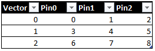

SimpleCtv is a basic test class to grab CTV data from one or more pins and set kill limits.
Tester capture data is usually LSB-MSB, so the template gives the use the ability to reformat the bits indexes. Each capture register is converted to an integer value and compared against per-register high and low limits. User is also able to select what registers to print to datalog.
Plist name. Important: This test class process CTV data only. No fail data.
Levels test condition.
Timings test condition.
Comma-separated list of pins to capture CTV data. If more than one pin is being used, all data is going be concatenated one vector at the time.

Command-line parameter. Define any number of register using bits ranges or list of indexes.
Registers = "--registers reg1:11-0 reg2:12,13,14"
Command-line parameter(optional). List registers to print to ituff.
Print = "--registers reg1 reg2"
Command-line parameter(optional). List high and low limits for each register.
Limits = "--high reg2:10 --low reg1:856"
[Returns(1, PortType.Pass, "Passed.")]
[Returns(0, PortType.Fail, "Failed plist execution..")]
[Returns(2, PortType.Fail, "Failed high limit.")]
[Returns(3, PortType.Fail, "Failed low limit.")]
[Returns(4, PortType.Fail, "Failed high and low limits.")]